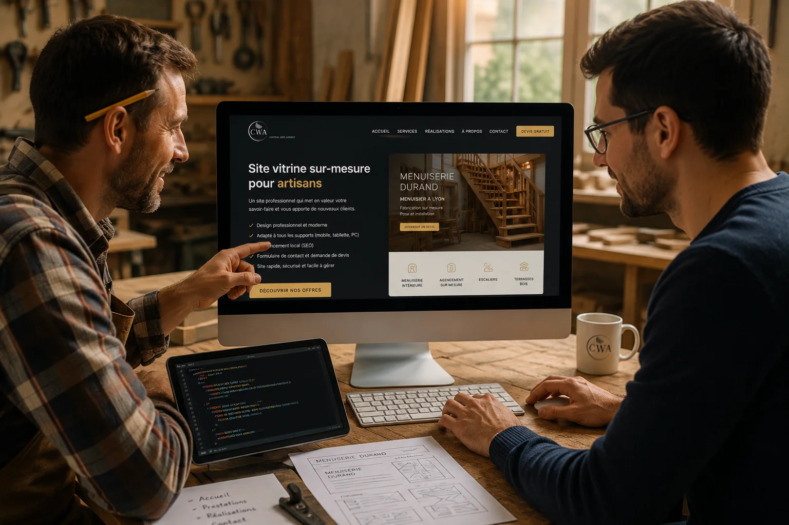

Par Central Web Agency · Mis à jour le

Le site vitrine d’un artisan doit répondre à quatre questions : que faites-vous, où intervenez-vous, à quoi ressemble votre travail et comment demander un devis ? À Lyon et dans les environs, vos pages peuvent compléter une recommandation en donnant immédiatement ces informations.
La checklist à préparer avant de créer le site
- Prestations. Indiquez les travaux que vous prenez en charge, les situations courantes et les limites de votre intervention.
- Chantiers. Choisissez des photos publiables et indiquez le type de travaux, les contraintes et le résultat visible. Affichez uniquement les qualifications ou labels que vous détenez.
- Zone desservie. Nommez les communes ou quartiers où vous intervenez réellement. Précisez les éventuelles conditions de déplacement.
- Demande de devis. Rendez le téléphone facile à trouver et indiquez les éléments à préparer, par exemple la commune, le type de travaux et le délai souhaité.
Comment le site complète vos recommandations
Un client peut recommander votre travail par téléphone ou partager une publication. Une page qui décrit la prestation, montre des chantiers comparables et indique votre zone donne à la personne recommandée les éléments pour vous contacter.
Exemple illustratif. Un particulier cherche un artisan pour une rénovation à Villeurbanne. Il vérifie que l’entreprise intervient dans sa commune, regarde des photos de chantiers du même type et précise la pièce concernée dans sa demande.
Quel format et quel budget pour un artisan ?
Chez CWA, une landing page dès 450 € TTC convient si vous présentez une seule prestation ou une campagne. Un site one-page dès 650 € TTC rassemble les informations essentielles. Une vitrine multipage dès 950 € TTC aide à détailler plusieurs métiers, services ou types de chantier.
Après livraison, la maintenance est facultative dès 39 €/mois pour une vitrine. La création est facturée séparément. TVA non applicable, art. 293 B du CGI.
La fiche de création de site pour artisan du bâtiment détaille les prestations CWA et les formats adaptés au projet.